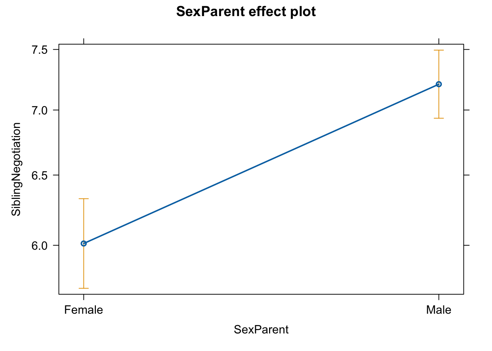
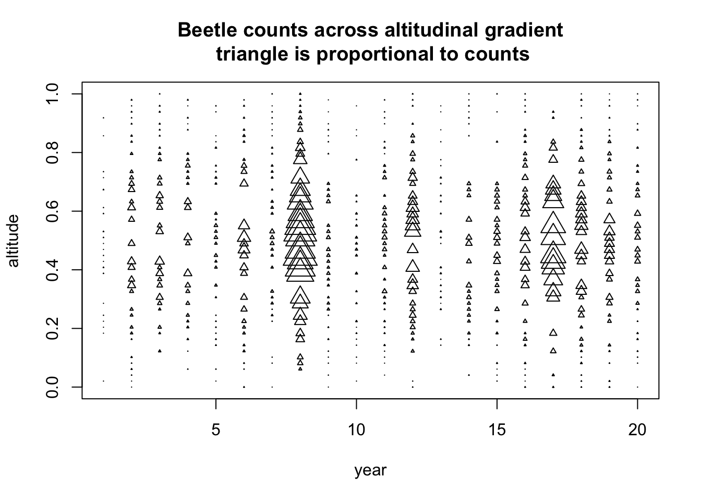
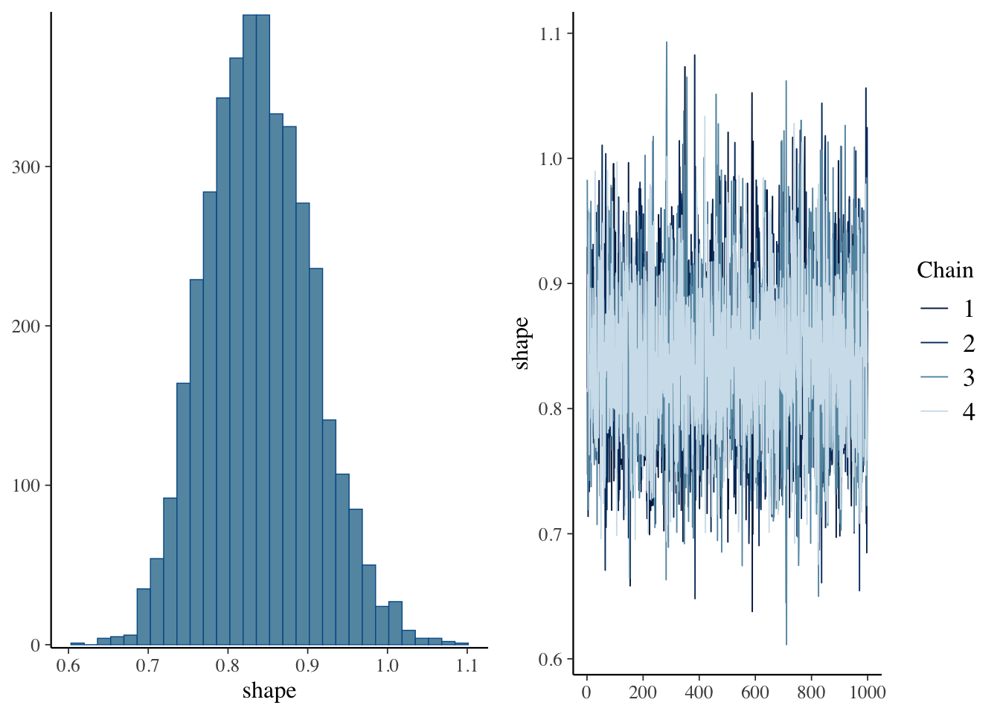
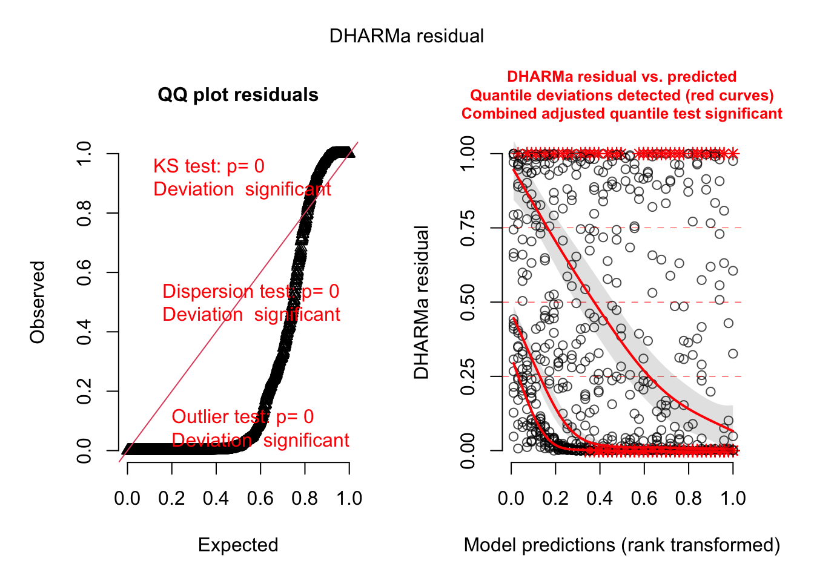
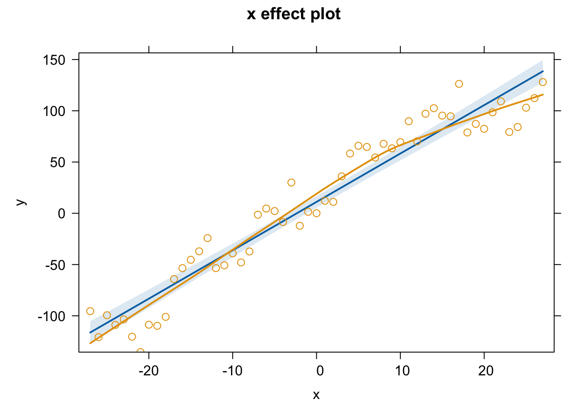
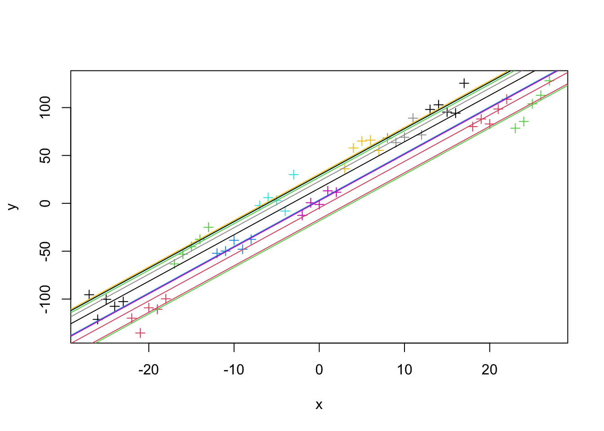
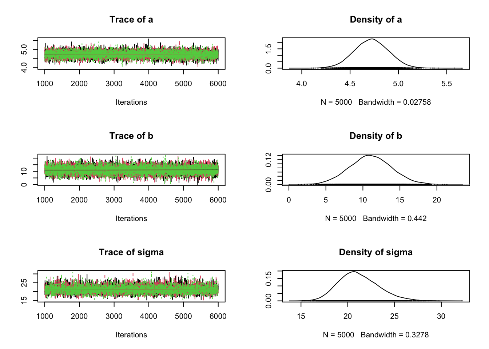
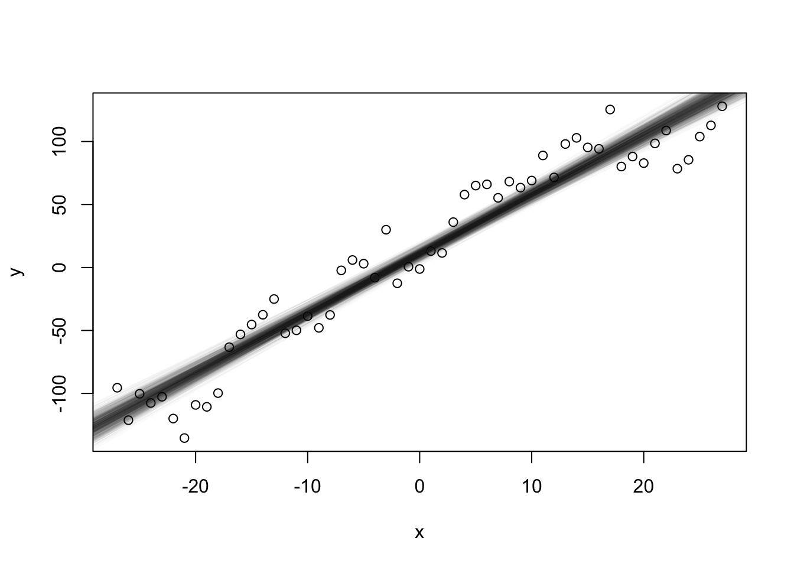

For this case study, we will use the fairly well known Owl dataset which is provided in glmmTMB (see ?Owls for more info about the data). A frequentist base model would be:
library(glmmTMB)library(effects)m1 <-glm(SiblingNegotiation ~ SexParent, data=Owls , family = poisson)summary(m1)
Call:
glm(formula = SiblingNegotiation ~ SexParent, family = poisson,
data = Owls)
Coefficients:
Estimate Std. Error z value Pr(>|z|)
(Intercept) 1.79380 0.02605 68.847 < 2e-16 ***
SexParentMale 0.18154 0.03272 5.548 2.89e-08 ***
---
Signif. codes: 0 '***' 0.001 '**' 0.01 '*' 0.05 '.' 0.1 ' ' 1
(Dispersion parameter for poisson family taken to be 1)
Null deviance: 4290.9 on 598 degrees of freedom
Residual deviance: 4259.7 on 597 degrees of freedom
AIC: 5944.5
Number of Fisher Scoring iterations: 5
plot(allEffects(m1))

Exercise 1: fit this GLM using a Bayesian approach, e.g. Jags, STAN or brms
Tip
For STAN and JAGS, you will have to transform categorical variables to dummy coding, i.e.
sex =as.numeric(Owls$SexParent) -1
Then you can code
sexEffect * sex[i]
Exercise 2: include a log offset to the model to account for BroodSize
m2 <-glm(SiblingNegotiation ~ FoodTreatment*SexParent +offset(log(BroodSize)), data=Owls , family = poisson)
Exercise 3: check residuals and / or add obvious additional components to the model inspired by the frequentist example here.
Iterations = 1001:6000
Thinning interval = 1
Number of chains = 3
Sample size per chain = 5000
1. Empirical mean and standard deviation for each variable,
plus standard error of the mean:
Mean SD Naive SE Time-series SE
EffectFoodTreatment -0.54651 0.05421 0.0004427 0.001616
EffectInterSexFood 0.07158 0.06832 0.0005578 0.002062
EffectSexParent 0.06640 0.04144 0.0003384 0.001319
intercept 0.59166 0.03361 0.0002744 0.001059
2. Quantiles for each variable:
2.5% 25% 50% 75% 97.5%
EffectFoodTreatment -0.65149 -0.58326 -0.54665 -0.50936 -0.4411
EffectInterSexFood -0.06583 0.02684 0.07175 0.11806 0.2032
EffectSexParent -0.01389 0.03880 0.06549 0.09367 0.1494
intercept 0.52279 0.57008 0.59213 0.61410 0.6568
Checking residuals
library(rjags)Data =list(SiblingNegotiation = Owls$SiblingNegotiation, SexParent =as.numeric(Owls$SexParent)-1, # dummy coding!FoodTreatment =as.numeric(Owls$FoodTreatment)-1,LogBroodSize =log(Owls$BroodSize),nobs =nrow(Owls))modelCode ="model{ for(i in 1:nobs){ SiblingNegotiation[i] ~ dpois(lambda[i]) # poisson error distribution lambda[i] <- exp(eta[i]) # inverse link function eta[i] <- intercept + EffectSexParent*SexParent[i] + EffectFoodTreatment*FoodTreatment[i] + EffectInterSexFood*SexParent[i]*FoodTreatment[i] + LogBroodSize[i] # linear predictor } intercept ~ dnorm(0,0.0001) EffectSexParent ~ dnorm(0,0.0001) EffectFoodTreatment ~ dnorm(0,0.0001) EffectInterSexFood ~ dnorm(0,0.0001) # Posterior predictive simulations for (i in 1:nobs) { SiblingNegotiationPred[i]~dpois(lambda[i]) }}"jagsModel <-jags.model(file=textConnection(modelCode), data=Data, n.chains =3)
Compiling model graph
Resolving undeclared variables
Allocating nodes
Graph information:
Observed stochastic nodes: 599
Unobserved stochastic nodes: 603
Total graph size: 3064
Initializing model
para.names <-c("intercept","EffectSexParent", "EffectFoodTreatment", "EffectInterSexFood","lambda", "SiblingNegotiationPred")Samples <-coda.samples(jagsModel, variable.names = para.names, n.iter =5000)library(BayesianTools)library(DHARMa)x =getSample(Samples)# note - previously, we calculated the predictions from the parameters# here we observe them directly - this is the normal way to calculate the# posterior predictive distributionposteriorPredDistr = x[,5:(4+599)]posteriorPredSim = x[,(5+599):(4+2*599)]sim =createDHARMa(simulatedResponse =t(posteriorPredSim), observedResponse = Owls$SiblingNegotiation, fittedPredictedResponse =apply(posteriorPredDistr, 2, median), integerResponse = T)plot(sim)
DHARMa:testOutliers with type = binomial may have inflated Type I error rates for integer-valued distributions. To get a more exact result, it is recommended to re-run testOutliers with type = 'bootstrap'. See ?testOutliers for details
DHARMa:testOutliers with type = binomial may have inflated Type I error rates for integer-valued distributions. To get a more exact result, it is recommended to re-run testOutliers with type = 'bootstrap'. See ?testOutliers for details
Family: negbinomial
Links: mu = log
Formula: SiblingNegotiation ~ FoodTreatment * SexParent + (1 | Nest) + offset(log(BroodSize))
Data: Owls (Number of observations: 599)
Draws: 4 chains, each with iter = 2000; warmup = 1000; thin = 1;
total post-warmup draws = 4000
Multilevel Hyperparameters:
~Nest (Number of levels: 27)
Estimate Est.Error l-95% CI u-95% CI Rhat Bulk_ESS Tail_ESS
sd(Intercept) 0.40 0.10 0.22 0.62 1.00 1154 1760
Regression Coefficients:
Estimate Est.Error l-95% CI u-95% CI Rhat
Intercept 0.72 0.14 0.44 1.01 1.00
FoodTreatmentSatiated -0.78 0.17 -1.11 -0.46 1.00
SexParentMale -0.03 0.15 -0.33 0.27 1.00
FoodTreatmentSatiated:SexParentMale 0.16 0.21 -0.25 0.55 1.00
Bulk_ESS Tail_ESS
Intercept 2378 2362
FoodTreatmentSatiated 2969 2813
SexParentMale 3144 2582
FoodTreatmentSatiated:SexParentMale 3108 2830
Further Distributional Parameters:
Estimate Est.Error l-95% CI u-95% CI Rhat Bulk_ESS Tail_ESS
shape 0.84 0.07 0.72 0.98 1.00 5101 2773
Draws were sampled using sampling(NUTS). For each parameter, Bulk_ESS
and Tail_ESS are effective sample size measures, and Rhat is the potential
scale reduction factor on split chains (at convergence, Rhat = 1).
plot(m2, ask =FALSE)


C.2 Beetles
# This first part creates a dataset with beetles counts across an altitudinal gradient (several plots each observed several years), with a random intercept on year and zero-inflation. altitude =rep(seq(0,1,len =50), each =20)dataID =1:1000spatialCoordinate =rep(seq(0,30, len =50), each =20)# random effects + zeroinflationplot =rep(1:50, each =20)year =rep(1:20, times =50)yearRandom =rnorm(20, 0, 1)plotRandom =rnorm(50, 0, 1)overdispersion =rnorm(1000, sd =0.5)zeroinflation =rbinom(1000,1,0.6)beetles <-rpois(1000, exp( 0+12*altitude -12*altitude^2# + overdispersion + plotRandom[plot]+ yearRandom[year]) * zeroinflation )data =data.frame(dataID, beetles, altitude, plot, year, spatialCoordinate)plot(year, altitude, cex = beetles/50, pch =2, main ="Beetle counts across altitudinal gradient\n triangle is proportional to counts")
DHARMa:testOutliers with type = binomial may have inflated Type I error rates for integer-valued distributions. To get a more exact result, it is recommended to re-run testOutliers with type = 'bootstrap'. See ?testOutliers for details
DHARMa:testOutliers with type = binomial may have inflated Type I error rates for integer-valued distributions. To get a more exact result, it is recommended to re-run testOutliers with type = 'bootstrap'. See ?testOutliers for details
qu = 0.25, log(sigma) = -2.69474 : outer Newton did not converge fully.

C.3 CNDD estimated, Comita et al., 2010
This is the model from Comita, L. S., Muller-Landau, H. C., Aguilar, S., & Hubbell, S. P. (2010). Asymmetric density dependence shapes species abundances in a tropical tree community. Science, 329(5989), 330-332.
The model was originally written in WinBugs. The version here was here slightly modified to be run with JAGS. Rerunning these models were part of the tests we did to settle on the methodology in Hülsmann, L., Chisholm, R. A., Comita, L., Visser, M. D., de Souza Leite, M., Aguilar, S., … & Hartig, F. (2024). Latitudinal patterns in stabilizing density dependence of forest communities. Nature, 1-8.
Our tests indicated that this model is excellent in recovering CNDD estimates from simulations. The main reason we didn’t use a similar model in Hülsmann et al., 2024 was computational limitations and the difficulty to include splines on the species-specific density responses in such a hierarchical setting.
Task: go through the paper and the code and try to understand what the structure of the model!
model{for (i in1:N) { SD[i] ~dbern(p[i]) SD_sim[i] ~dbern(p[i])logit(p[i]) <- B[SPP[i], ] %*% PREDS[i, ] + u[PLOT[i]] }# Standard Random intercept on plotfor (m in1:Nplots) { u[m] ~dnorm(0, a.tau) } a.sigma ~dunif(0, 100) a.tau <-1/ (a.sigma * a.sigma)#redundant parameterization speeds convergence in WinBugs, see Gelman & Hill (2007)for (k in1:K) {for (j in1:Nspp) { B[j, k] <- xi[k] * B.raw[j, k] } xi[k] ~dunif(0, 100) }#multivariate normal distribution for B values of each speciesfor (j in1:Nspp) { B.raw[j, 1:K] ~dmnorm(B.raw.hat[j, ], Tau.B.raw[, ])#G.raw is matrix of regression coefficients for species-level model#ABUND is species-level predictors (abundance and shade tolerance)for (k in1:K) { B.raw.hat[j, k] <- G.raw[k, ] %*% ABUND[j, ] # ABUND needs to be matrix w/ 1st column all 1's } }#priors for G and redundant parameterizationfor (k in1:K) {for (l in1:3) { G[k, l] <- xi[k] * G.raw[k, l] G.raw[k, l] ~dnorm(0, 0.1) } }#covariance matrix modeled using scaled inverse wishart model Tau.B.raw[1:K, 1:K] ~dwish(W[, ], df) df <- K +1 Sigma.B.raw[1:K, 1:K] <-inverse(Tau.B.raw[, ])# correlationsfor (k in1:K) {for (k.prime in1:K) { rho.B[k, k.prime] <- Sigma.B.raw[k, k.prime] /sqrt(Sigma.B.raw[k, k] * Sigma.B.raw[k.prime, k.prime]) }# sigma.B[k] <-abs(xi[k]) *sqrt(Sigma.B.raw[k, k]) }################ Predictions ############# Addition to original model (Nov 2019)# to estimate the effect of mortality (response) when changing 1 unit on x-axis# data (old, read with the name 'txt') is centered but not scaled, therefore 'zero' is here the value of '-6.81'for (i in1:N) { baseMort[i] =ilogit(B[SPP[i], 1] * PREDS[i, 1] + B[SPP[i], 2] * (-6.81) + B[SPP[i], 3:5] %*% PREDS[i, 3:5]) conMort[i] =ilogit(B[SPP[i], 1] * PREDS[i, 1] + B[SPP[i], 2] * (-5.81) + B[SPP[i], 3:5] %*% PREDS[i, 3:5])# relConEffekt[i] <- (conMort[i] - baseMort[i]) / baseMort[i]# hetEffekt[i] <- ilogit(B[SPP[i],1] * PREDS[i,1] + B[SPP[i],2] * PREDS[i,3]^CC[SPP[i]] + B[SPP[i],3] * 1 + B[SPP[i],4:5] %*% PREDS[i,4:5]) - ilogit(B[SPP[i],1] * PREDS[i,1] + B[SPP[i],2] * PREDS[i,3]^CC[SPP[i]] + B[SPP[i],3] * 0 + B[SPP[i],4:5] %*% PREDS[i,4:5]) }}
C.4 Support for mixed model
## ---- echo=F, warning=F, message=F---------------------------------------set.seed(123)rm(list=ls(all=TRUE))library(rjags)library(runjags)library(lme4)library(effects)library(R2jags)## ---- fig.width=5, fig.height=5------------------------------------------a <-5b <-10sigma <-10rsigma =30group =rep(1:11, each =5)randomEffect =rnorm(11, sd = rsigma)x <--27:27y <- a * x + b +rnorm(55,0,sd = sigma) + randomEffect[group]plot(x,y, col = group, pch =3)
Call:
lm(formula = y ~ x)
Residuals:
Min 1Q Median 3Q Max
-47.433 -12.519 -2.537 16.466 34.061
Coefficients:
Estimate Std. Error t value Pr(>|t|)
(Intercept) 11.1194 2.7890 3.987 0.000206 ***
x 4.7193 0.1757 26.862 < 2e-16 ***
---
Signif. codes: 0 '***' 0.001 '**' 0.01 '*' 0.05 '.' 0.1 ' ' 1
Residual standard error: 20.68 on 53 degrees of freedom
Multiple R-squared: 0.9316, Adjusted R-squared: 0.9303
F-statistic: 721.6 on 1 and 53 DF, p-value: < 2.2e-16
plot(allEffects(fit, partial.residuals = T))

## ---- fig.width=5, fig.height=5------------------------------------------fit <-lmer(y ~ x + (1|group))summary(fit)
Linear mixed model fit by REML ['lmerMod']
Formula: y ~ x + (1 | group)
REML criterion at convergence: 429.8
Scaled residuals:
Min 1Q Median 3Q Max
-1.90580 -0.71978 0.06106 0.58382 2.12310
Random effects:
Groups Name Variance Std.Dev.
group (Intercept) 399.10 19.978
Residual 87.83 9.372
Number of obs: 55, groups: group, 11
Fixed effects:
Estimate Std. Error t value
(Intercept) 11.1194 6.1546 1.807
x 4.8561 0.3569 13.608
Correlation of Fixed Effects:
(Intr)
x 0.000
plot(x,y, col = group, pch =3)for(i in1:11){abline(coef(fit)$group[i,1], coef(fit)$group[i,2], col = i)}

## ------------------------------------------------------------------------# 1) Model definition exactly how we created our data modelCode =" model{ # Likelihood for(i in 1:i.max){ y[i] ~ dnorm(mu[i],tau) mu[i] <- a*x[i] + b } # Prior distributions a ~ dnorm(0,0.001) b ~ dnorm(0,0.001) tau <- 1/(sigma*sigma) sigma ~ dunif(0,100) } "# 2) Set up a list that contains all the necessary data (here, including parameters of the prior distribution) Data =list(y = y, x = x, i.max =length(y))# 3) Specify a function to generate inital values for the parameters inits.fn <-function() list(a =rnorm(1), b =rnorm(1), sigma =runif(1,1,100))## ---- fig.width=7, fig.height=7------------------------------------------# Compile the model and run the MCMC for an adaptation (burn-in) phase jagsModel <-jags.model(file=textConnection(modelCode), data=Data, init = inits.fn, n.chains =3, n.adapt=1000)
Compiling model graph
Resolving undeclared variables
Allocating nodes
Graph information:
Observed stochastic nodes: 55
Unobserved stochastic nodes: 3
Total graph size: 230
Initializing model
# Specify parameters for which posterior samples are saved para.names <-c("a","b","sigma")# Continue the MCMC runs with sampling Samples <-coda.samples(jagsModel, variable.names = para.names, n.iter =5000)# Plot the mcmc chain and the posterior sample for pplot(Samples)

dic =dic.samples(jagsModel, n.iter =5000) dic
Mean deviance: 490.4
penalty 3.133
Penalized deviance: 493.5
Iterations = 1001:6000
Thinning interval = 1
Number of chains = 3
Sample size per chain = 5000
1. Empirical mean and standard deviation for each variable,
plus standard error of the mean:
Mean SD Naive SE Time-series SE
a 4.721 0.178 0.001454 0.001454
b 11.035 2.867 0.023412 0.023413
sigma 21.181 2.133 0.017413 0.024463
2. Quantiles for each variable:
2.5% 25% 50% 75% 97.5%
a 4.374 4.602 4.721 4.84 5.068
b 5.497 9.119 11.008 12.94 16.756
sigma 17.484 19.696 20.983 22.53 25.838
## ---- fig.width=5, fig.height=5------------------------------------------plot(x,y)sampleMatrix <-as.matrix(Samples)selection <-sample(dim(sampleMatrix)[1], 1000)for (i in selection) abline(sampleMatrix[i,2], sampleMatrix[i,1], col ="#11111105")

Alternative: mixed model
## ------------------------------------------------------------------------# 1) Model definition exactly how we created our data modelCode =" model{ # Likelihood for(i in 1:i.max){ y[i] ~ dnorm(mu[i],tau) mu[i] <- a*x[i] + b + r[group[i]] } # random effect for(i in 1:nGroups){ r[i] ~ dnorm(0,rTau) } # Prior distributions a ~ dnorm(0,0.001) b ~ dnorm(0,0.001) tau <- 1/(sigma*sigma) sigma ~ dunif(0,100) rTau <- 1/(rSigma*rSigma) rSigma ~ dunif(0,100) } "# 2) Set up a list that contains all the necessary data (here, including parameters of the prior distribution) Data =list(y = y, x = x, i.max =length(y), group = group, nGroups =11)# 3) Specify a function to generate inital values for the parameters inits.fn <-function() list(a =rnorm(1), b =rnorm(1), sigma =runif(1,1,100), rSigma =runif(1,1,100))## ---- fig.width=7, fig.height=7------------------------------------------# Compile the model and run the MCMC for an adaptation (burn-in) phase jagsModel <-jags.model(file=textConnection(modelCode), data=Data, init = inits.fn, n.chains =3, n.adapt=1000)
Compiling model graph
Resolving undeclared variables
Allocating nodes
Graph information:
Observed stochastic nodes: 55
Unobserved stochastic nodes: 15
Total graph size: 300
Initializing model
# Specify parameters for which posterior samples are saved para.names <-c("a","b","sigma", "rSigma")# Continue the MCMC runs with sampling Samples <-coda.samples(jagsModel, variable.names = para.names, n.iter =5000)# Plot the mcmc chain and the posterior sample for pplot(Samples)